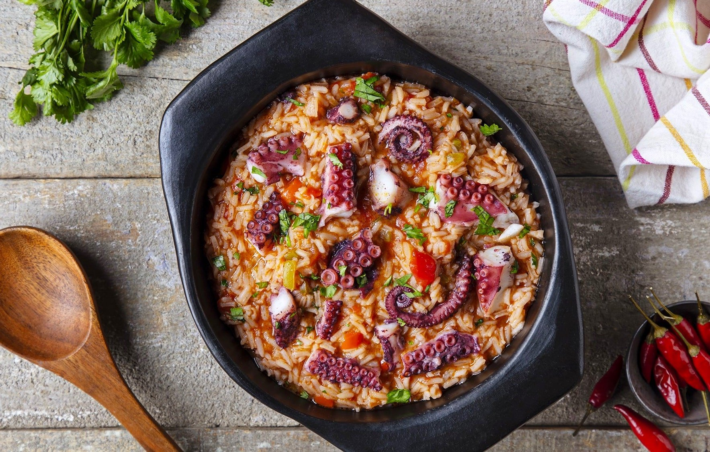
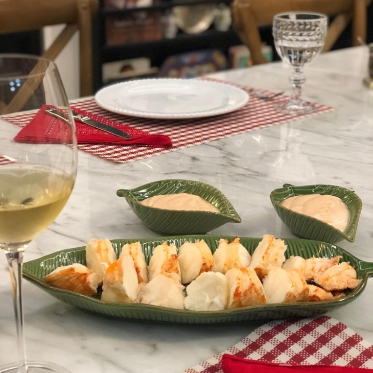
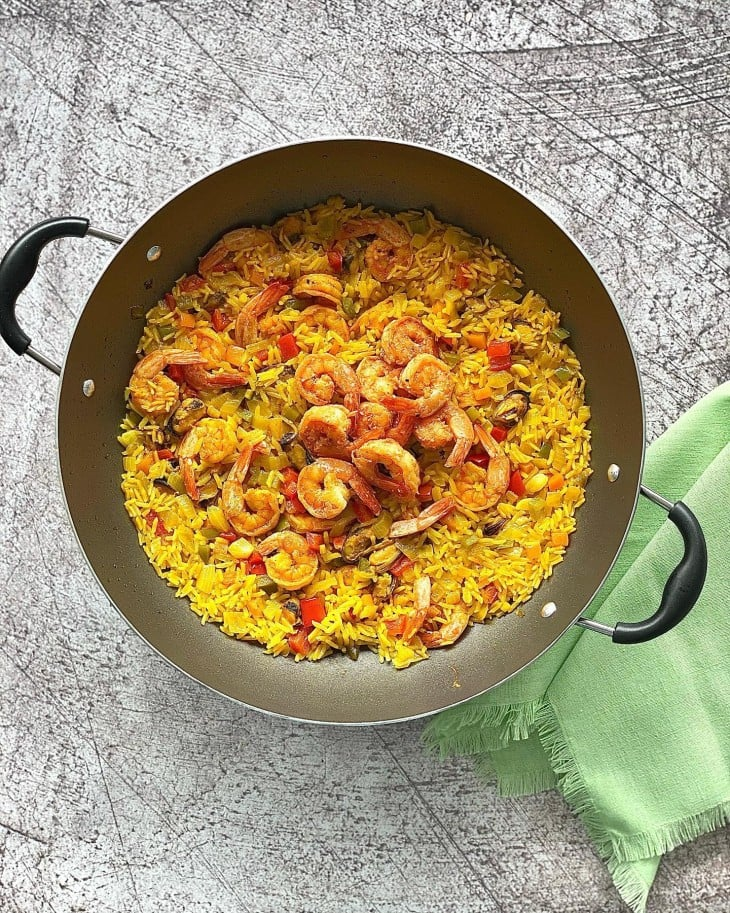
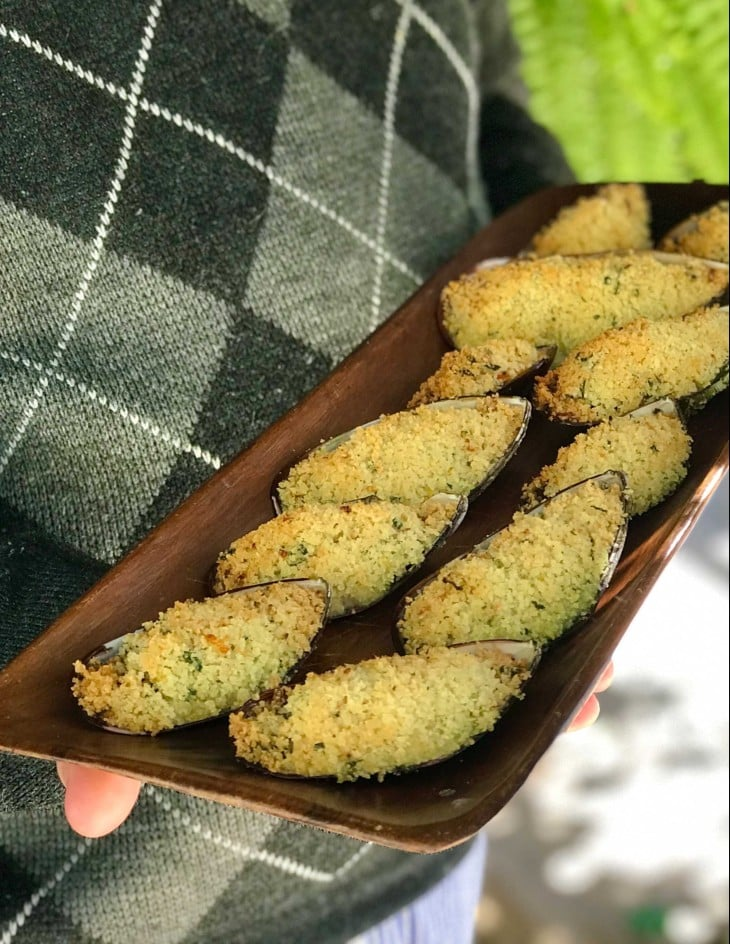
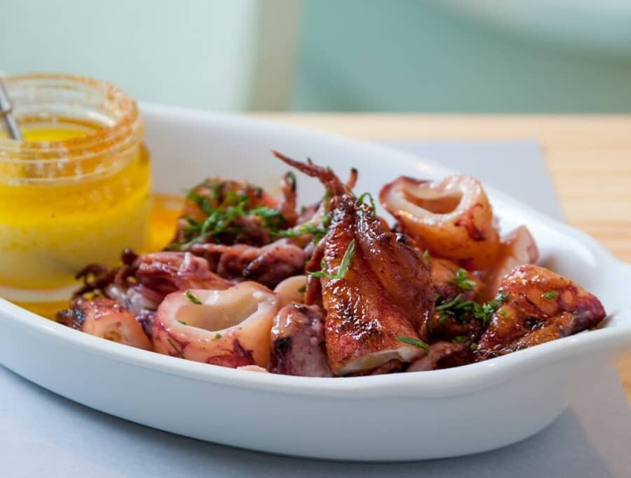

Arroz de polvo
- Polvo - 150gr
- 2 copos de água de cozedura do polvo
- 1 copo de arroz
- 1/2 cebola
- 1 cenoura pequena
- 2 dentes de alho
- Um fio de azeite
- Uma pitada de sal
Ingredientes
- Depois de teres o polvo cozinhado, corta este em pedaços e deixa de parte.
- Começa com um refogado numa pequena panela, com a cebola picada, alho picado e a cenoura picada, deixa refogar até a cebola ficar bem dourada.
- Depois adiciona o arroz e deixa este fritar um pouco, por fim adiciona o polvo em pedaços seguido de dois copos de água de cozedura do polvo, adiciona uma pitada de sal e deixa ferver.
- Quando começar a ferver, baixa o lume e tapa a panela, deixa cozinhar uns 12 minutos até o arroz ficar bem tenro e já está, pronto a servir.
Como preparar

Lagosta ao molho rosé
- 1kg de cauda de lagosta
- 300ml de creme de leite fresco
- 1 colher de sopa de maionese
- 1/2 colher de sopa de mostarda
- 5 colheres de ketchup
- 1 colher de molho inglês
- 1 colher de sopa de conhaque ou whisky
- Sal a gosto
- Pimenta-do-reino a gosto
Ingredientes
- Em uma panela com água fervente, coloque as caudas de lagosta e cozinhe por 15 minutos.
- Escorra a lagosta e retire a casca com uma tesoura.
- Fatie a carne e coloque no prato de servir.
- Em um recipiente, bata o creme de leite com um batedor manual ou mixer até obter uma consistência cremosa, mas com cuidado para não virar chantilly.
- Inclua maionese, mostarda, ketchup, molho inglês, conhaque, sal e pimenta-do-reino. Misture bem.
- Sirva ao lado da lagosta. Bom apetite.
Como preparar

Paella com camarão e mexilhão
- 400 gramas de camarão limpo
- 150 gramas de mexilhão pré-cozido
- 1 xícara de chá de arroz
- 1 cebola
- 2 dentes de alho
- Pimentão-verde, pimentão-laranja e pimentão-vermelho a gosto
- Azeite, sal, pimenta-do-reino e páprica picante a gosto
- Açafrão-da-terra ou cúrcuma a gosto
Ingredientes
- Tempere os camarões e os mexilhões com sal, pimenta-do-reino e páprica picante.
- Em uma paellera ou frigideira, acrescente azeite e doure os camarões. Reserve.
- Na mesma panela, adicione mais azeite e cebola picada.
- Deixe refogar e acrescente o alho picado.
- Em seguida, adicione os pimentões coloridos cortados em cubos.
- Deixe refogar e adicione o arroz.
- Tempere com sal, pimenta, cúrcuma e páprica.
- Acrescente os mexilhões e 2/3 dos camarões.
- Misture e adicione caldo de camarão ou água quente suficiente para cozinhar.
- Deixe cozinhar em fogo baixo até secar.
- Decore com os camarões reservados e sirva. Bom apetite.
Como preparar

Mexilhão com farofa
- 1 pacote de mexilhão
- 1/2 concha já limpo e cozido
- 1 xícara de chá de farinha panko
- 2 colheres de sopa de manteiga
- 3 dentes de alho
- 2 colheres de sopa de parmesão
- 1 colher de sobremesa de cheiro verde
- Raspas de 1 limão-siciliano
- Pimenta-do-reino e sal a gosto
Ingredientes
- Em uma panela, derreta a manteiga e refogue o alho. Reserve.
- Em uma tigela, misture a farinha panko e o parmesão.
- Adicione amanteiga e o alho nessa mistura.
- Finalize com as raspas de limão,pimenta, cheiro-verde e sal.
- Solte os mexilhões das conchas.
- Tempere com sal e pimenta. Adicione a farofa sob os mexilhões.
- Leve para assar em forno preaquecido a 200°C até dourar.
Como preparar

Lula à provençal
- 1/2 kg de lula
- 1 cabeça de alho picado em rodelas
- 2 colheres (sopa) de margarina
- 200 ml de água
- Azeite a gosto
- Cebolinha verde picada a gosto
- Sal a gosto
Ingredientes
- Coloque a lula em uma frigideira com água fervente.
- Deixe por 1 minuto para dar uma ligeira aferventada.
- Escorra a lula tirando toda a água.
- Leve uma outra frigideira ao fogo, coloque a margarina e doure levemente o alho. Despeje as lulas.
- Diminua o fogo. Acrescente o sal a gosto, a cebolinha e o azeite para finalizar.
- Quando a lula ficar de cor rosada, é sinal de que está no ponto.
Como preparar

Tacacá
- 1 xícara (chá) de polvilho azedo
- 2 litros de água
- 500 ml de tucupi
- 2 dentes de alho picados
- 1/2 maço de chicória-do-norte
- 1/2 maço de alfavaca (manjericão-de-folha-larga)
- Sal
- Folhas de 1/2 maço de jambu cozidas e espremidas
- 300 g de camarões secos demolhados e escorridos
- Pimenta-de-cheiro a gosto
Ingredientes
- Misture bem o polvilho com a água em uma panela e leve ao fogo, mexendo até engrossar (este é o mingau de goma). Reserve.
- Leve o tucupi ao fogo, tempere com o alho, a chicória, a alfavaca e sal a gosto e deixe levantar fervura.
- Baixe o fogo, tampe a panela e deixe cozinhar por 30 minutos.
- Em cada cuia de servir (para que se possa tomá-lo diretamente do recipiente), coloque 2 colheres (sopa) do tucupi, 1 concha do mingau de goma, algumas folhas de jambu, uns 5 camarões e sal e pimenta-de-cheiro a gosto.
Como preparar
/i.s3.glbimg.com/v1/AUTH_1f540e0b94d8437dbbc39d567a1dee68/internal_photos/bs/2024/n/E/l8wOYAQMezCj4J6gr44A/papinha-de-brocolis-com-peixe.jpg)
Papinha de brocólis com peixe
- 1 pedaço pequeno de cebola picada
- 1 dente de alho
- 1 colher (café) de óleo de coco
- 1 filé médio de peixe sem espinhas picado
- 1/2 xícara (chá) de brócolis cozido
- 1 batata média cozida e picada
- Sal
Ingredientes
- Refogue a cebola e o alho no óleo de coco até começarem a dourar.
- Adicione o peixe e refogue um pouco mais.
- Acrescente os legumes e cozinhe até que estejam bem macios.
- Tempere com sal, amasse com o garfo e sirva morna.
Como preparar
/i.s3.glbimg.com/v1/AUTH_1f540e0b94d8437dbbc39d567a1dee68/internal_photos/bs/2024/q/D/V5UdhdSU2IRedLmhs5gw/fricasse-de-camarao.jpg)
Fricassê de camarão
- 500 g de camarões pequenos
- Sal e pimenta-do-reino a gosto
- Suco de 1/2 limão
- 1 fio de azeite de oliva
- 1 cebola pequena picadinha
- 2 dentes de alho picadinhos
- 1 tomate sem pele e sementes em cubinhos
- Salsa e cebolinha picadas
- 1/2 sachê de molho de tomate
- 200 g de milho, palmito ou champignon
- 1 caixinha de creme de leite
- 50 g de parmesão ralado
- 1 pote de requeijão
- 100 g de muçarela fatiada
Ingredientes
- Tempere os camarões com sal e pimenta a gosto e o suco de limão. Reserve.
- Aqueça o azeite e refogue a cebola e o alho.
- Junte o tomate e salsa e cebolinha a gosto e refogue um pouco mais.
- Acrescente os camarões e o molho de tomate e misture.
- Deixe cozinhar até os camarões mudarem de cor. Reserve.
- No liquidificador, bata o milho, palmito ou champignon com o creme de leite e o parmesão. Reserve.
- Em refratário, espalhe o requeijão no fundo e despeje o molho de camarão.
- Regue com o creme batido e distribua a muçarela.
- Leve ao forno médio preaquecido (200 ºC) por cerca de 20 minutos ou até gratinar levemente.
- Sirva decorado a gosto e acompanhado de arroz branco e, se desejar, de batata palha.
Como preparar

Strogonoff de camarão
- meio quilo de camarão médio limpo
- meia colher (sopa) de MAGGI® Fondor
- 1 pitada de pimenta-do-reino
- 1 colher (sopa) de azeite
- 1 colher (sopa) de manteiga
- 1 cebola média ralada
- meia xícara (chá) de conhaque
- 100 g de champignons em conserva fatiados
- 2 colheres (sopa) de purê de tomate
- 1 colher (sopa) de mostarda
- 2 colheres (sopa) de ketchup
- 1 lata de NESTLÉ® Creme de Leite
Ingredientes
- Em um recipiente, tempere os camarões com o MAGGI Fondor e a pimenta-do-reino.
- Em uma frigideira, aqueça o azeite e refogue os camarões, aos poucos, em fogo alto.
- Retire os camarões e coloque a manteiga.
- Doure a cebola, junte os camarões e despeje o conhaque, espere aquecer e incline levemente a frigideira para flambar o conhaque. Aguarde acabar a chama.
- Junte os champignons, tampe a frigideira e deixe por alguns minutos.
- Acrescente o purê de tomate, a mostarda e o ketchup, misture bem.
- Abaixe o fogo, deixe por cerca de 5 minutos, com a frigideira tampada.
- Incorpore delicadamente o NESTLÉ Creme de Leite e sirva.
Como preparar

Arroz Chop Suey (ou Yakimeshi)
- 20 ml de óleo de milho
- 1 cebola picada (70 g)
- 1 cenoura em cubos pequenos (80 g)
- 70 g de presunto em cubos pequenos
- 320 g de camarão médio, limpo e descascado
- 2 ovos
- meia colher (chá) de glutamato monossódico
- Sal à gosto
- Pimenta-do-reino à gosto
- 400 g de arroz branco cozido
- meia colher (sopa) de óleo de gergelim torrado
- 30 ml de molho de ostra
- 30 g de cebolinha fresca
Ingredientes
- Em uma frigideira, coloque o óleo de milho, a cebola cortada e a cenoura picadas em cubos pequenos, mexendo continuamente até refogar. Em seguida, acrescente o presunto cortado em cubos pequenos e o camarão, movimentando os ingredientes sem parar.
- Em um recipiente, bata os ovos e com auxílio de uma espátula, abra um espaço na superfície da frigideira e o acrescente, mexendo até incorporar a mistura. Coloque o glutamato monossódico e tempere o preparo com sal e pimenta à gosto.
- Inclua o arroz cozido, o óleo de gergelim torrado e o molho de ostras na frigideira, mexendo até que esteja pronto. Após, pique a cebolinha em fatias finas e adicione ao preparo para finalizar e decorar. Sirva.